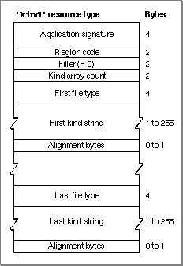

Legacy Document
Important: The information in this document is obsolete and should not be used for new development.
Important: The information in this document is obsolete and should not be used for new development.


The Kind Resource
You should add a kind resource to your application's resource file. This resource, of type'kind', specifies custom kind strings, which override the Finder's normal algorithm for generating kind strings. Figure 7-12 shows the format of a compiled kind resource.Figure 7-12 Structure of a compiled kind (
'kind') resource A kind resource consists of your application's signature and a list of file types and their associated custom kind strings. The Finder displays a document's kind string when a folder's contents are viewed by name, size, kind, label, or date (that is, by any method other than by icon or small icon).
Because your application's signature is included in the kind resource, the resource can
be located in some file other than the application's resource fork. However, a kind resource located in an application's resource fork overrides any kind resource for that application located elsewhere.A kind resource contains a region code, which specifies the region code of the kind strings contained in the resource. The Finder uses only custom kind strings that have the same region code as the current system itself.
In the list of file types and associated kind strings, you can use the special file type
ftApplicationNameto specify the name of your application. Whenever Macintosh Easy Open encounters a document that belongs to your application but whose file type isn't listed in your application's kind resource, the Finder uses its standard algorithm to generate a kind string in the form "<application name> document".
- Note
- See Listing 7-3 on page 7-15 for a sample kind resource.